DBMS Course Project · PostgreSQL 16
Personal data,
found and masked.
A privacy platform that discovers sensitive data, recommends protection, and deploys human-approved masking as security-barrier SQL views — without ever modifying the source data.
Taarun · B.Tech Computer Science Engineering · Amrita Bangalore
The problem
Personal data lives in ordinary tables — and people need to query them.
- Organisations keep emails, phones, PAN and Aadhaar numbers, cards and account numbers as plain columns.
- Analysts, support staff and developers need the data to do their jobs — but not the raw values.
- Copying the data into a "safe" database creates a second copy to protect and a synchronisation problem.
- Hiding columns only in the application still leaves the table readable by anyone the database authorises.
| full_name | pan | aadhaar | |
|---|---|---|---|
| Synthetic Customer 1 | customer1@example.com | ABCDE0001F | 2345 6789 0001 |
| Synthetic Customer 2 | customer2@example.com | ABCDE0002F | 2345 6789 0002 |
| Synthetic Customer 3 | customer3@example.com | ABCDE0003F | 2345 6789 0003 |
enterprise.customers — the source table, unchanged. Read as ps_scanner.
The core question · why a DBMS
An application can be bypassed. The database is the last line of defence.
Integrity is enforced, not hoped for
Primary keys, foreign keys, UNIQUE and CHECK constraints mean a bug cannot write a bad row. The rule holds for every client, not just our code.
One source of truth
Job state, policies and audit records are durable rows in PostgreSQL — not process memory. A restart or a crash resumes the same state.
ACID transactions
An approval, its audit event and the status change commit together. There is no window where the system is half-updated.
Concurrency control
Row locks, transaction-level advisory locks and unique idempotency keys make two administrators racing on the same policy safe.
Authorisation in the database
Six purpose-built roles with least privilege. The server refuses a read — not merely a hidden button in the UI.
Protection that cannot be routed around
Masking is a security_barrier view. The guarantee survives psql, a new client, or a bug in our own API.
The workflow · seven steps
Discover → recommend → approve → deploy → audit.
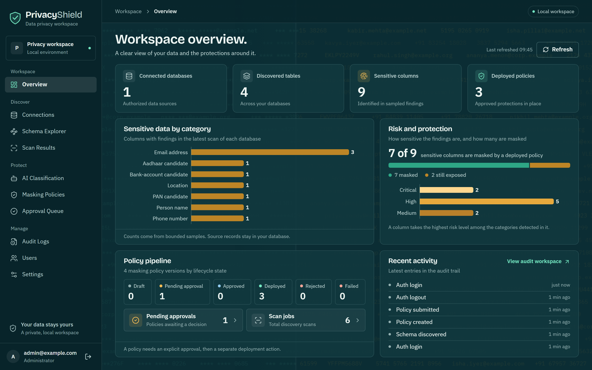
Architecture · two databases
Normalized metadata and customer data never share a database.
Control plane
Normalized metadata and sanitized evidence. Users, connections, snapshots, jobs, classifications, policies and the audit chain. It is never a copy of the customer database and holds no raw PII.
Target
The database being protected. The application only ever reads it under ps_scanner and writes privacy infrastructure under ps_deployer. The bundled target is synthetic.
Schema · entity relationships
20 relationships across 15 control-plane tables.
Concept · integrity constraints
The rules live in the schema, not in the documentation.
| Constraint | Where | What it prevents |
|---|---|---|
| PRIMARY KEY (UUID) | every table | Display names changing; identity drift |
| FOREIGN KEY | 20 relationships | Orphan rows, dangling references |
| UNIQUE | email, connection name, session token, policy version, idempotency key | Duplicate emails, names, tokens, replays |
| CHECK | roles, states, sample limits, counts, confidence, progress | Negative counts, over-range confidence |
| Composite FK | scan_jobs, classification_job_items | Cross-connection or cross-scan references |
-- The same rule, expressed as data: email UNIQUE NOT NULL -- normalized (lower-case) role CHECK (role IN ('ADMIN', 'ANALYST', 'AUDITOR')) sample_limit CHECK (sample_limit BETWEEN 1 AND 10000) matching_rows CHECK (matching_rows >= 0) confidence CHECK (confidence BETWEEN 0 AND 1) session_tokens UNIQUE (sha256) -- plaintext never stored policy version UNIQUE (policy_id, version)
Concept · composite foreign keys
A scan cannot use another connection's snapshot — even if both rows exist.
A snapshot is identified by id, but it is only meaningful inside the connection it was discovered from. Two single-column foreign keys would each be satisfied by a mismatched pair.
-- schema_snapshots gains a redundant-but-meaningful key UNIQUE (id, connection_id) -- scan_jobs then references the pair, not just the id FOREIGN KEY (snapshot_id, connection_id) REFERENCES schema_snapshots (id, connection_id)
The same technique ties classification_job_items to the scan they belong to, so an accepted AI recommendation must reference the exact selected pair.
# verified against the running database $ SELECT conname, pg_get_constraintdef(oid) FROM pg_constraint WHERE contype = 'f' AND conrelid = 'scan_jobs'::regclass; fk_scan_jobs_connection_id_database_connections FOREIGN KEY (connection_id) REFERENCES database_connections(id) fk_scan_jobs_requested_by_users FOREIGN KEY (requested_by) REFERENCES users(id) fk_scan_jobs_snapshot_id_schema_snapshots FOREIGN KEY (snapshot_id, connection_id) REFERENCES schema_snapshots(id, connection_id)
Concept · normalization & semi-structured data
Relational where identity matters, JSONB only where shape varies.
Normalized into separate facts
- Users, connections, scans, classifications and policies have independent lifecycles.
- A job's requester is a foreign key, not a repeated name or email.
- Results reference jobs instead of duplicating endpoint credentials.
- Rules and approval decisions are separate rows tied to an exact policy version — an edit creates a new version, never overwrites one.
- History is retained: users and connections are deactivated, not deleted.
JSONB — allowed only here
- Immutable external catalog snapshots (the source schema's varying shape).
- Bounded, sanitized evidence from a scan.
- Event details on the audit trail.
Never a substitute for ownership, status, identity or approval columns. Plaintext credentials and raw PII are prohibited in every column — including inside JSONB and audit fields.
Concept · views as the protection mechanism
Deployment compiles a policy into one security-barrier view.
Columns without a rule become a typed NULL, so the column list stays stable but nothing leaks. This is the real definition of the deployed view, read back from PostgreSQL.
CREATE OR REPLACE VIEW privacyshield_masked.customers_20f808f337c9 WITH (security_barrier = true) AS SELECT NULL::bigint AS id, encode(extensions.hmac(convert_to(full_name, 'UTF8'::name), (SELECT pseudonym_keys.key FROM privacyshield_private.pseudonym_keys WHERE domain = 'demo' AND key_version = 1), 'sha256'::text), 'hex'::text) AS full_name, encode(extensions.hmac(convert_to(email, 'UTF8'::name), (SELECT pseudonym_keys.key FROM privacyshield_private.pseudonym_keys WHERE domain = 'demo' AND key_version = 1), 'sha256'::text), 'hex'::text) AS email, NULL::text AS phone, NULL::text AS pan, NULL::text AS aadhaar, CASE WHEN address IS NULL THEN NULL::text ELSE '[REDACTED]'::text END AS address, NULL::jsonb AS profile, NULL::timestamp WITH time zone AS created_at FROM enterprise.customers;
***Concept · the eight protection actions
Every rule compiles to predefined, injection-safe SQL.
| Action | Compiled SQL | Result |
|---|---|---|
| KEEP | "col" AS "col" | pass-through |
| REDACT | CASE WHEN col IS NULL THEN NULL ELSE '[REDACTED]' END | [REDACTED] |
| PARTIAL | '***' || right(col::text, 4) | ***1234 |
| MASK_EMAIL | first char + '***@' + host | c***@example.com |
| MASK_PHONE | all digits but last four → * | +** ***** *0001 |
| MASK_ID | letters/digits but last four → * | **** **** 0001 |
| PSEUDONYMIZE | encode(hmac(col, key, 'sha256'), 'hex') | deterministic token |
| NULLIFY / RESTRICT | NULL::<type> | no value exposed |
| Column | Source (ps_scanner) | View (ps_reader) |
|---|---|---|
| full_name | Synthetic Customer 1 | ab41a5ed4828fa3a… |
| customer1@example.com | e6957fdbf73d7fb9… | |
| phone | +91 90000 00001 | NULL |
| pan | ABCDE0001F | NULL |
| aadhaar | 2345 6789 0001 | NULL |
| address | 1 Example Street… | [REDACTED] |
- Pseudonyms are deterministic and domain-keyed, so related columns still join.
- Identifiers and types are validated before interpolation — no string-concatenated user input.
- Preview runs the real expressions over invented examples: no source row is read.
Concept · access control (DCL)
Six roles. Each one can do the least it needs to.
| Database | Role | Responsibility |
|---|---|---|
| Control | ps_migrator | Schema ownership and migration DDL |
| Control | ps_app | Runtime CRUD as granted; append-only audit writes |
| Target | ps_scanner | Read authorised tables; no writes |
| Target | ps_deployer | Restricted privacy-infrastructure deployment; not a superuser |
| Target | ps_view_owner | NOLOGIN owner of masked views |
| Target | ps_reader | SELECT on approved views only; no base-table access |
Application roles are separate: ADMIN approves and deploys, ANALYST writes policies, AUDITOR is read-only. The server checks on every request.
# the database itself refuses the read $ psql -U ps_reader -d enterprise_demo \ -c "SELECT full_name FROM enterprise.customers LIMIT 1;" ERROR: permission denied for schema enterprise -- and the view it *is* allowed to read $ SELECT c.relname, c.reloptions, pg_get_userbyid(c.relowner) AS view_owner FROM pg_class c ... customers_20f808f337c9 | {security_barrier=true} | ps_view_owner $ SELECT rolname, rolcanlogin, rolsuper FROM pg_roles WHERE rolname LIKE 'ps\_%'; ps_deployer | t | f ps_reader | t | f ps_scanner | t | f ps_view_owner | f | f -- NOLOGIN $ has_schema_privilege('ps_reader', 'enterprise', 'USAGE'); f -- no base-table path at all
Concept · transactions & concurrency
Every state change is one transaction, or it did not happen.
Job creation + audit commit together
Queued delivery can be retried without creating duplicate business work. The durable row is the queue.
Approval locks the policy row
The decision, the status change and the audit event commit atomically. A concurrent decision on an already-transitioned version returns 409.
Deployment is idempotent
A durable, unique idempotency key and at most one active attempt per policy. A target-side advisory lock serialises related changes.
Target work is one transaction
Source revalidation, view creation, grants and the receipt share a single target transaction — so a failure leaves no half-deployed view.
-- lifecycle is a constrained state machine, not a free string DRAFT → PENDING_APPROVAL → APPROVED → DEPLOYED ↘ REJECTED APPROVED → FAILED (retry only, same fingerprint)
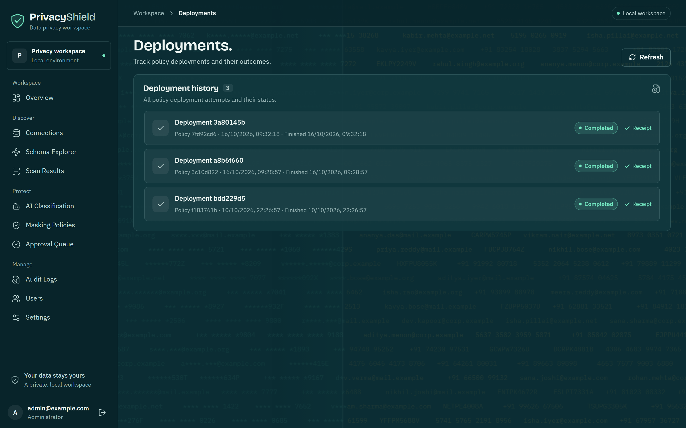
Concept · idempotency & recovery
Two databases cannot share one transaction. The design owns that.
- Lock the deployment, recheck the schema and the privileges, then execute predefined SQL in a single target transaction.
- Record an idempotent receipt in that same transaction.
- After an uncertain outcome — a network error after commit — read the target receipt and reconcile control-plane state.
| Uncertainty | How the design answers it |
|---|---|
| Worker dies mid-job | The durable row is recovered as a new attempt; Postgres holds the state, Redis holds only identifiers. |
| Two admins decide at once | Row lock + state check → the second request gets 409. |
| Deploy request retried | Unique idempotency key → the same attempt, not a second view. |
| Commit succeeds, reply lost | Read the target receipt; reconcile. Never misreported as rolled back. |
Recovery is a database property: durable rows, locks and keys — not an in-memory retry loop.
Concept · tamper evidence
An insert-only hash chain over the audit log.
CREATE TABLE audit_chain ( chain_index bigint PRIMARY KEY CHECK (chain_index >= 1), event_id uuid NOT NULL UNIQUE -- one seal per event REFERENCES audit_events (id), prev_hash varchar(64) NOT NULL CHECK (prev_hash ~ '^[0-9a-f]{64}$'), row_hash varchar(64) NOT NULL CHECK (row_hash ~ '^[0-9a-f]{64}$'), sealed_at timestamptz NOT NULL DEFAULT now() ); -- runtime grants deny UPDATE, DELETE and TRUNCATE -- on audit_events; the chain is append-only
-- verify: does every link match the previous hash? WITH ordered AS ( SELECT chain_index, prev_hash, lag(row_hash) OVER (ORDER BY chain_index) AS expected FROM audit_chain ) SELECT count(*) AS broken_links FROM ordered WHERE prev_hash <> repeat('0', 64) AND prev_hash IS DISTINCT FROM expected; broken_links -------------- 0 -- 85 sealed events, every link intact
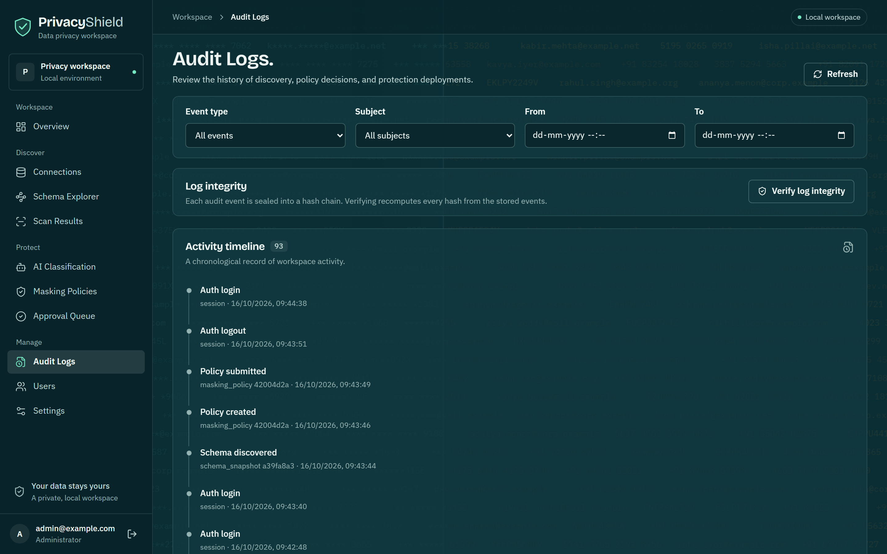
Concept · indexing
Indexes are chosen from the queries the system actually runs.
Foreign-key indexes
Every FK is indexed so joins and cascading checks do not degrade into sequential scans as the audit and job tables grow.
Job status & time
Polling and recovery scan for queued or stale jobs by state and timestamp — the hot path of the worker loop.
Audit actor & timestamp
Reviewing "what did this person do, and when" answers from an index instead of scanning the whole audit table.
-- the shapes the indexes serve SELECT ... FROM scan_results WHERE job_id = :id; -- FK index SELECT ... FROM scan_jobs WHERE status = 'QUEUED' ORDER BY created_at; -- status/time SELECT ... FROM audit_events WHERE actor_id = :user ORDER BY occurred_at DESC; -- actor/time
- Migrations are the single schema authority — Alembic, never
create_all()for upgrades. - Indexes are added with the migration that introduces the query, so schema and access path ship together.
- The audit chain's primary key on
chain_indexgives the chain a dense, ordered scan with no gaps.
The running app · discover
From a connection to bounded findings.
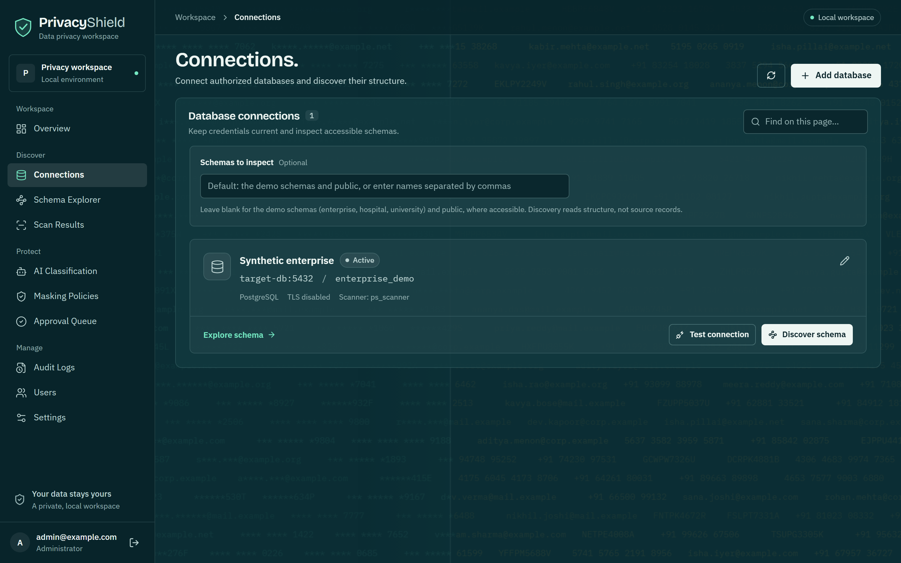
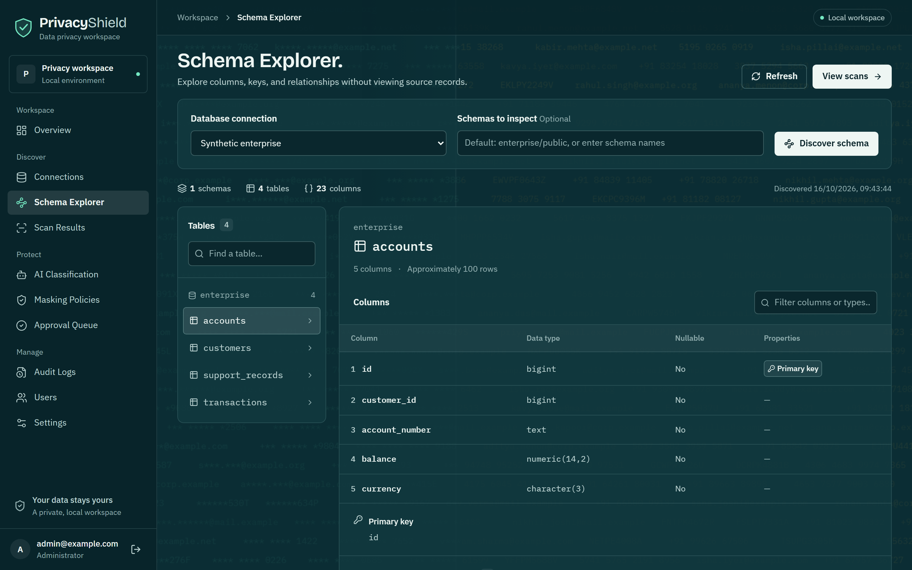
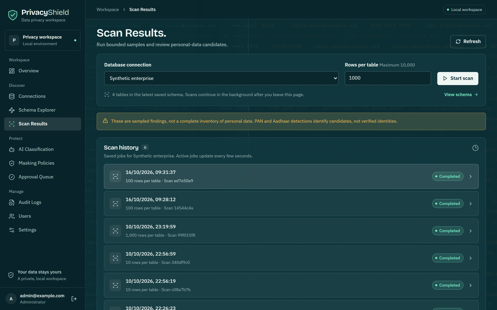
The running app · protect
From a recommendation to a masked view.
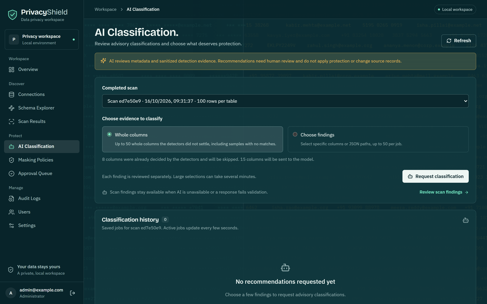
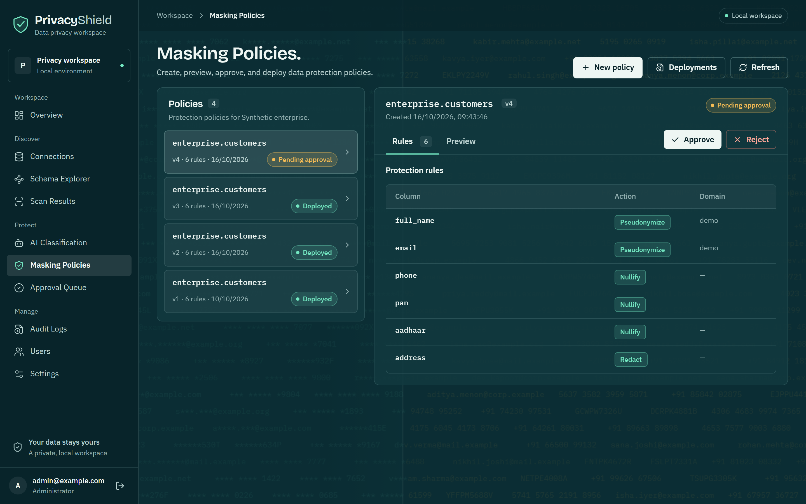
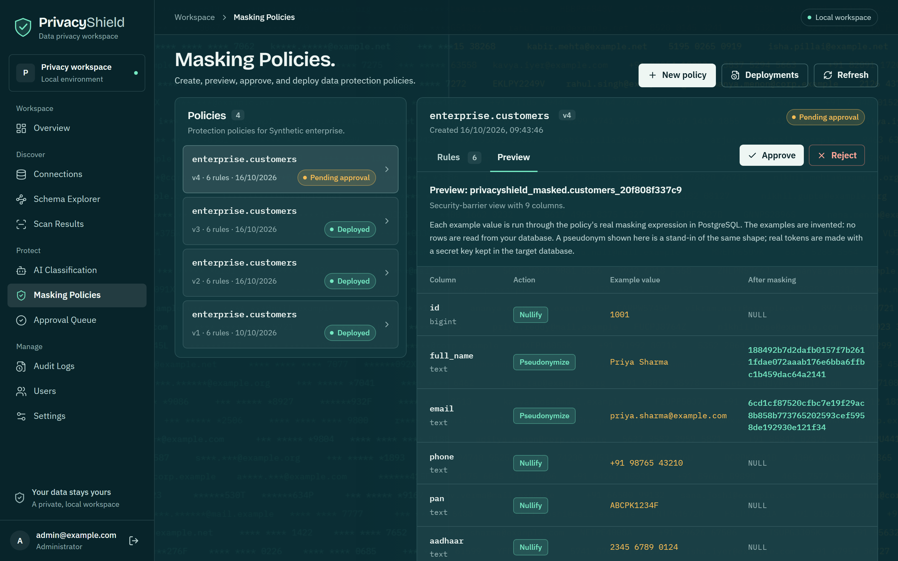
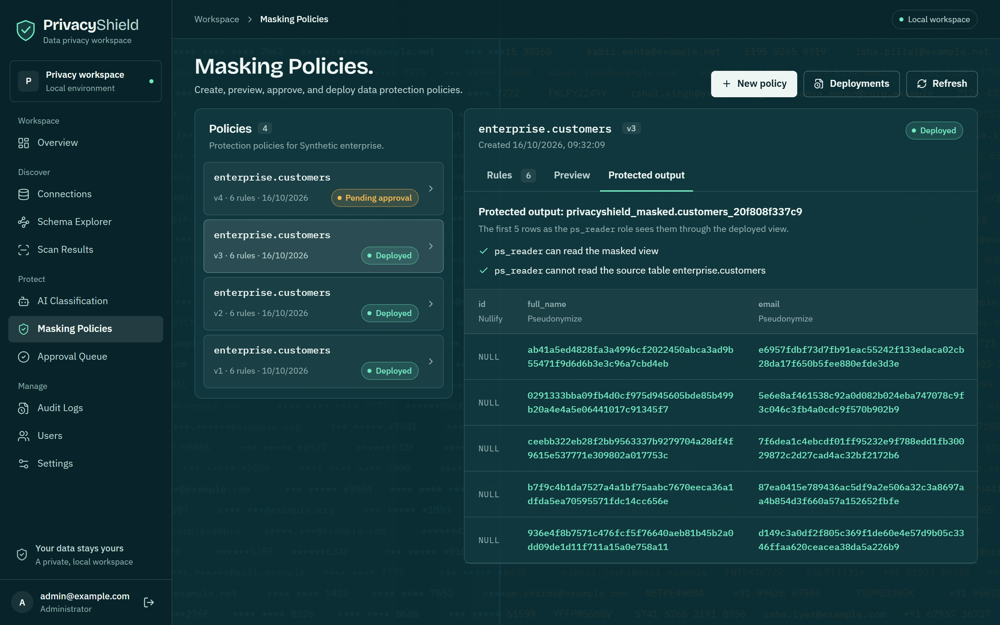
ps_reader sees them through the deployed view.The running app · manage & audit
Decisions, integrity and accounts.
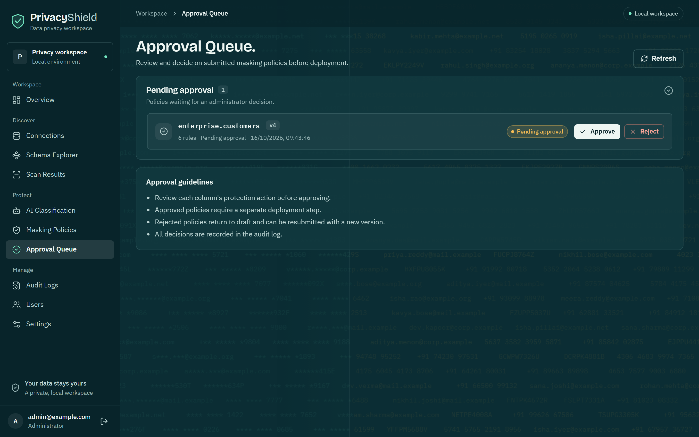
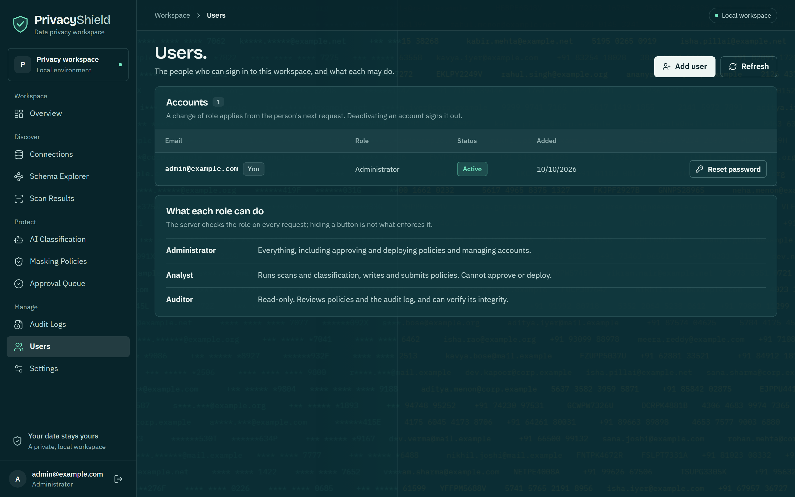
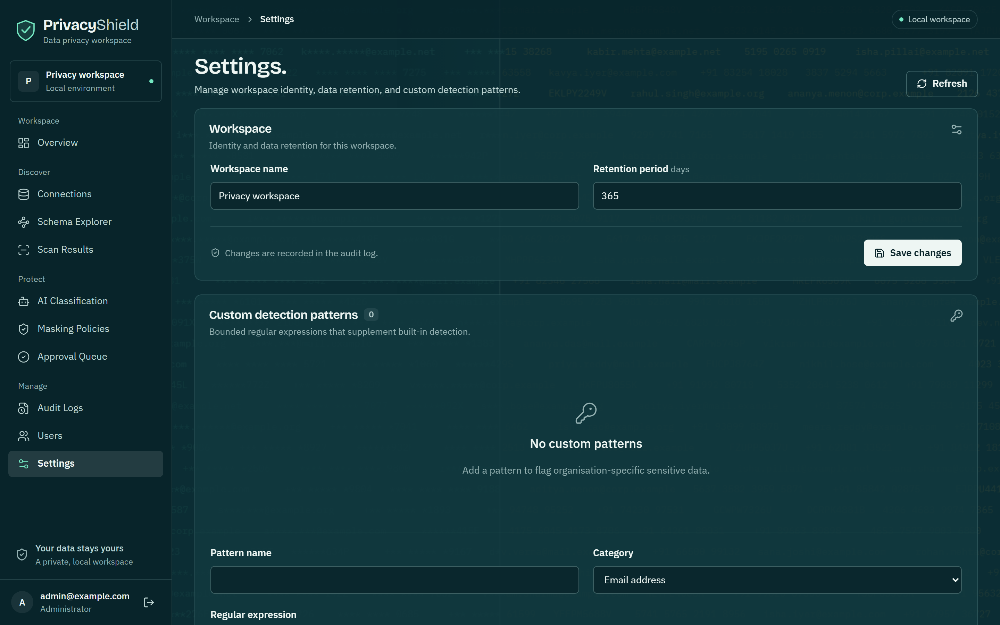
Evidence · the same table, three roles
The protection is visible from psql — not just the UI.
$ psql -U ps_scanner -d enterprise_demo -c "SELECT full_name, email, pan, aadhaar FROM enterprise.customers LIMIT 3;" full_name | email | pan | aadhaar ----------------------+-----------------------+------------+---------------- Synthetic Customer 1 | customer1@example.com | ABCDE0001F | 2345 6789 0001 Synthetic Customer 2 | customer2@example.com | ABCDE0002F | 2345 6789 0002 Synthetic Customer 3 | customer3@example.com | ABCDE0003F | 2345 6789 0003
$ psql -U ps_reader -d enterprise_demo -c "SELECT full_name, email, phone FROM privacyshield_masked.customers_20f808f337c9 LIMIT 3;" full_name | email | phone ------------------------------------+--------------------------------+------- ab41a5ed4828fa3a4996cf2022450abc… | e6957fdbf73d7fb91eac55242f133e… | 0291333bba09fb4d0cf975d945605bde… | 5e6e8af461538c92a0d082b024eba7… | ceebb322eb28f2bb9563337b9279704a… | 7f6dea1c4ebcdf01ff95232e9f788e… | $ psql -U ps_reader -d enterprise_demo -c "SELECT full_name FROM enterprise.customers LIMIT 1;" ERROR: permission denied for schema enterprise
Reproduce · verify it yourself
Everything above runs locally in Docker.
git clone https://github.com/Taarunkarthik/PRIVACY-SHIELD.git cd PRIVACY-SHIELD && git switch dev/privacyshield python scripts/setup.py # generates local secrets docker compose up --build -d --wait docker compose exec api python -m app.cli create-admin \ --email admin@example.com # no default password # then open http://localhost:8080
# the full acceptance gate, against real services $ python scripts/check.py --integration # proven on a real PostgreSQL, Redis and Celery worker: ✓ migrations applied by the migration role ✓ scanner cannot write; reader cannot read base tables ✓ deployment idempotency and reconciliation ✓ audit chain verification
- CI runs the same gate on every push.
- The bundled target data is synthetic.
- Per-phase verification records live in
docs/.
Honest scope
What this is, and what it is not.
Limitations
- PAN and Aadhaar detection identifies candidates, not verified identities.
- Findings describe a bounded sample, not full-table coverage.
- AI output is advisory; it cannot execute SQL and needs human review.
- Deployment onto source tables that use row-level security is deferred (scanning still respects RLS).
- The default configuration is a local demonstration, not a compliance certification.
Future work
- Policy deployment into RLS-protected source tables.
- Column-level GRANT policies alongside view-based masking.
- Scheduled re-scans with schema-drift detection against the stored fingerprint.
- Cross-database pseudonym domains so joins survive masking.
- TLS, secure cookies and explicit origins before any exposure beyond localhost.
Thank you
The database is not the storage layer of this project. It is the design.
Repository and full documentation:
github.com/Taarunkarthik/PRIVACY-SHIELD
Taarun · B.Tech Computer Science Engineering · Amrita Bangalore · DBMS coursework